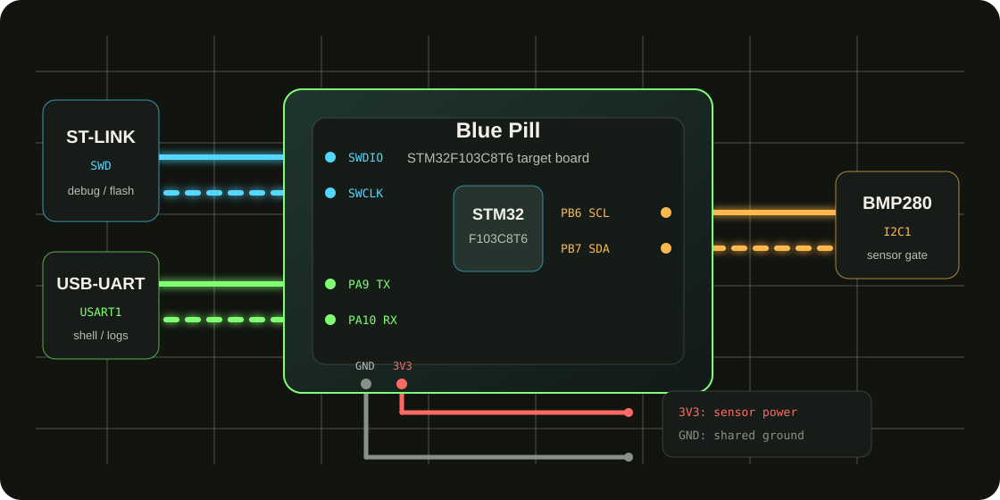

BMP280 chip_id = 0x58, I2C responds, and a broken wire is not the first suspect.

Starter-F103 Sensor Lab
Take over a deliberately broken F103 sensor bench.
This is not a screenshot tutorial. It is a small embedded failure mission: wire the bench, pass the baseline, import a known-bad case, generate evidence, ask AI to reason from that evidence, then apply a minimal fix and prove PASS.
mission brief
This is an engineering detective mission, not an all-green demo.
You take over an F103 + BMP280 bench. I2C can read the chip ID and raw calibration exists, but the data_quality gate fails. Your job is not to guess the answer; it is to collect evidence, form hypotheses, and let AI narrow the search using the same evidence.
Sensor output is not credible, but raw bytes and telemetry CRC show the whole path is not simply dead.
AI reads the manifest, serial log, raw values, and case notes before giving ranked hypotheses.
bench wiring
Build the bench clearly before the failure matters.
The main visual is a simplified wiring diagram rather than a photo, so board variants and wire clutter do not distract. SWD flashes the target, USART1 shows shell/logs, I2C1 talks to BMP280, and all modules share ground.

wiring checklist
- SWDST-LINK -> SWDIO / SWCLK / GND
- UARTUSB-UART -> PA9 / PA10 / GND
- I2CBMP280 -> PB6 SCL / PB7 SDA
- PowerBMP280 uses 3V3 and all modules share ground
mission map
You move through one complete debugging journey.
01Wirebench
02CubeMXIOC
03App Layerintegrate
04BaselinePASS
05Import Bugknown-bad
06Gate FAILdata_quality
07AI Packetevidence
08Minimal Fixhuman review
09RegressionPASS
failure scene
Failure is not the end. Failure becomes the evidence package.
serial console
>> sensor read
DATA_QUALITY result=FAIL
chip_id=0x58 PASS
raw_calib=present
telemetry_crc=PASS
gate=data_quality
ai_prompt.md generatedevidence folder
- 00_manifest.json
- sensor_test.log
- serial_capture.log
- ai_prompt.md
- test_summary.md
ai diagnosis packet
AI is not guessing. It receives a case packet.
- DATA_QUALITY result=FAIL
- chip_id=0x58 PASS
- raw_calib=present
- telemetry_crc=PASS
- sensor completely disconnected
- I2C address completely wrong
- no raw calibration data
- telemetry transport fully broken
- list observations
- rank hypotheses
- propose minimal fix scope
- do not guess hardware failure
manual vs ai
Diagnose manually first, then ask AI with the same evidence.
The point is not that AI is always right. The point is that AI helps narrow the search, while the engineer confirms the fix.
- read serial logs
- suspect wiring or address
- check I2C and chip ID
- rule out disconnected hardware
- continue into compensation data
- read ai_prompt.md
- cite chip_id PASS
- rule out full sensor disconnect
- focus on raw calibration / compensation
- propose minimal fix scope
case ladder
Four known-bad cases work like progressive levels.
level 1 · case aBMP280 Data Quality
I2C and chip ID pass, but compensated sensor data is not credible.
Open Case Alevel 2 · case bI2C Reset Recovery
The bus can fail after reset, requiring reset recovery plus GPIO/I2C state reasoning.
Open Case Blevel 3 · case cFlash Persistence
A value appears to save, but reload after reset fails, requiring raw record, CRC, and reload evidence.
Open Case Clevel 4 · case dUART DMA/IDLE Stream
Stream boundaries, rate, and truncation mimic harder UART/DMA timing failures in real projects.
Open Case Dstart now